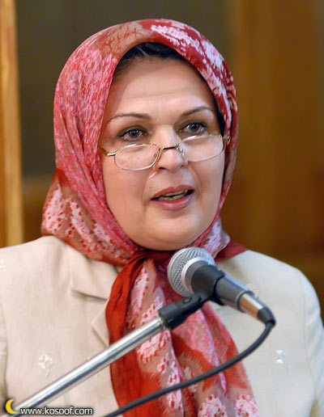
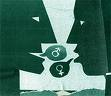
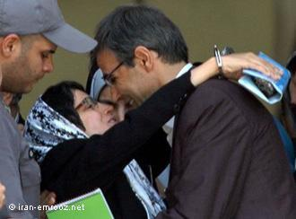
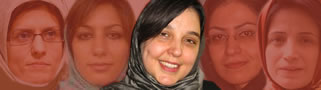
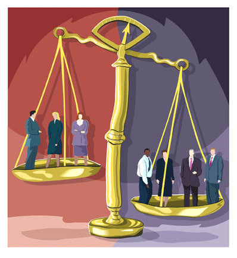

تغییر برای برابری
تغییر برای برابریدلیل عدم تداوم همگرایی های اول و دوم جنبش زنان در خصوص انتخابات و خشونت ، این بود که همگرایی برای طرح مطالبات از ریس جمهور دهم،مقطعی و مهلت اش تا پایان انتخابات بود. دومین همگرایی با عنوان همگرایی زنان علیه خشونت ،با افزایش حجم سرکوبها و ، مهاجرت برخی اعضای موثر در همگرایی دوم به حال تعلیق در آمد . چون ما اخلاقاً به خود اجازه نمی دادیم بدون حضور و اجازه این دوستان از همان نام ها استفاده کنیم، به ویژه آن جمع جدید فکر می کردکه ممکن است تغیراتی در تحلیل ها و نگرش های اعضای قبلی همگرایی در رابطه با حوادث پس از انتخابات ایجاد شده باشد، .این بود که در ادامه همان توافقات حداکثری در همگرایی ها ، و پس از چندین و چند جلسه مشورتی، سرانجام توافق حد اکثری بر ایجادهمگرایی با نام همگرایی سبز جنبش زنان شکل گرفت و در عرصه عمومی مطرح شد. ولی در حقیقت این همگرایی هم در ادامه همان مشی غالب بر هم اندیشی ها و همگرایی های گذشته و در تداوم انها شکل گرفته است...
پذيرش > واژه كليدها > صفحه بندی > ستون وسط
ستون وسط
مقالهها
-

مینو مرتاضی: نحوه برقراری پیوند بین جنبش زنان با جنبش سبز ، از طریق نزدیکی آرمانها و مطالبات برابری خواهانه است
4 سپتامبر 2010 -

جنسیت زدگی زبان /تنظیم کننده: سیما م
30 مارس 2010, بوسيلهى pariدر زبان جنسیت زده تجارب آدمی از دیدگاهی مردانه ولی به عنوان هنجاری برای عام مطرح می شود (برای مثال معادل بودن man و human). یکی از خصوصیات جنسیت زدگی زبان، نادیده انگاشتن بخش دیگری از مردم است که عموما شامل زنان میشود. این امر در تعاملهای گفتاری به زن از خود بیگانگی و انزوا میدهد.
-
فرزندآوری حق زنان است نه وظیفهی آنها / نفیسه آزاد
5 اوت 2012مدتی است رسانههای دولتی خبر از سیاستگذاری جدید دولت در ارتباط با جمعیت میدهند، برنامههای جدید که ظاهرن از پیامدهای نتایج سرشماری جمعیتی سال 90 است.در عرض کمتر از یک ماه خبر حذف بودجهی تنظیم خانواده، حذف برنامههای رایگان وازکتومی و توپکتومی و بهکارگیری بستههای تشویقی مانند افزایش ساعات شیردهی، افزایش کمکهزینهی نگهداری فرزندان و برداشتن تنبیهات قانونی برای فرزند دوم به بعد برای خانوادهها نقل محافل دولتی میشود. اما آیا داستان فرزندآوری به همینجا ختم میشود؟ ...
-
 آنکه یادش ماندگار است نامیرا است، نامیرا چون بهاره علوی
آنکه یادش ماندگار است نامیرا است، نامیرا چون بهاره علوی
26 آوريل 2011امروز، دوست و همراه، فعال کرد و فعال پی گیر جنبش زنان درکمپین یک میلیون امضا را از دست دادیم . بهاره با وجود آنکه تنها 20 بهار عمر را سپری کرده بود کارنامه ای پربار داشت. او فعال حقوق بشر، زنان، وبلاگ نویس و نویسنده بود.
-

رضا خندان : خواستهی امروز ما رسیدگی پزشکی و مرخصی استعلاجی برای نسرین است
8 دسامبر 2012اعتصاب غذای نسرین ستوده در اعتراض به ممنوعالخروجی دخترش نزدیک به پنجاه روز به طول انجامید. در طول این مدت، رضا خندان همسر او نه تنها همچنان وظیفهی نگهداری و مراقبت از بچهها را به عهده داشت بلکه پیگیر کار نسرین بود تا آنجا که اطلاع رسانیها و فعالیتهایش در این رابطه بالاخره نتیجه داد و با برآورده شدن خواستهی نسرین او به اعتصاب غذایش پایان داد. در ادامه گفتگوی کوتاهی داشتیم با آقای خندان در ارتباط با اعتصاب نسرین و وضعیت امروز او...
-
جنبش زنان نیازمند اتخاذ استراتژی تازه
9 مارس 2012هنوز در فضای جدید اصولاً به این پرسش پاسخ داده نشده است که آیا استراتژی جنبش زنان کماکان بازی در زمین قانون است یا معطوف به فراتررفتن از نظم موجود سیاسی و اقتصادی. ایضاً هیچ مشخص نیست که جنبش زنان کماکان برای تحقق تغییرات حقوقی تلاش می کند یا از گفتگو با تالارهای قدرت به تمامی مأیوس شده است. وانگهی حتی پس از شکست سیاسی سه سالۀ اخیر نیز جنبش زنان عیناً مثل جنبش سبز هنوز درنیافته است که نیاز به تغییر جهت گیری طبقاتی خود دارد چندان که به سهم خود ائتلاف با طبقۀ بورژوازی را به کناری بگذارد و در عوض در خدمت برقراری نوعی ائتلاف طبقاتی میان طبقۀ متوسط و طبقات مردمی قرار گیرد. مجموعۀ این جهت گیری هاست که امکان و کیفیت ادامۀ فعالیت تشکل های زنان را تعیین می کند.
-

سوسن طهماسبی، مدافع حقوق بشر، جایزه اش را به زنان فعال دربند اهدا می کند
10 نوامبر 2010امروز سوسن طهماسبی، دریافت کننده جایزه معتبر آلیسون دفورژ برای فعالیت خستگی نا پذیر در سال 2010 ، جایزه خود را به نسرین ستوده، وکیل و فعال حقوق بشرهم اکنون دربند و دیگر فعالان زن در بند اهدا کرد. اهدای این جایزه به طهماسبی از طرف دیده بان حقوق بشر برای اقدامات شجاعانه اش در راستای ترفیع و ارتقای جامعه مدنی و حقوق زنان در ایران است.
-
هفتمين دوره اهدا تندیس صدیقه دولت آبادی در حوزه مطالعات زنان
16 مارس 2011در داوری تندیس 1389 مانند سال های گذشته در ابتدا با مراجعه به منابع مختلف لیست کتاب های مربوط به زنان جمع اوری شد . این لیست در برگیرنده حدود 60 عنوان بود . پس از گزینش اولیه 30 کتاب باقی ماند. کتاب های سال 1388 گستره بزرگی را در بر می گرفتند . از اسیب های اجتماعی ، خشونت ، ادبیات ،تاریخ و مجموعه ای از قوانین .تعدد کتاب ها در سال گذشته و همچنین تنوع عناوین نمایشگر رو اوردن افرادي از گروه های مختلف نگرشهاي متفاوت به حوزه مطالعات زنان بود...
-
 زنان لیبی را تنها نخواهیم گذاشت
زنان لیبی را تنها نخواهیم گذاشت
20 نوامبر 2011, بوسيلهى pariآنچه که در لیبی گذشت و می گذرد را نمی توان صرفن از دیدگاه "قذافی بد در مقابل ناتوی خوب" و یا با لعکس بررسی کرد. بکارگیری خشونت مطلق از طرف رژیم قذافی جوانان این کشور را مجبور به مبارزه مسلحانه کرد. اما ساده انگارانه خواهد بود اگر دخالت نظامی ناتو در لیبی را بشر دوستانه تلقی کنیم.
-

یک ماه با زنان در خبر: خرداد، ماه همبستگی / نفیسه آزاد
30 ژوئن 2010خرداد هم آمد و با رفتنش بهار را با خود برد. بهاری که برای زنان در خبرها چیزی نبود جز مسئله ی حجاب و مسئله ی طلاق و ازدواج. گویی با وجود آمارهایی که گاهی، آن هم به طور پراکنده از سازمان¬های مختلف نشان از هزاران مشکل زنان ایرانی دارد برای دولت-مردان و دولت- زنان چیزی مهم¬تر از حجاب و عفاف زنان نیست، حتی اگر آنها بیکار باشند، فقر حرکتی داشته باشند، بیش از نیمی¬شان از داروهای روان درمانی استفاده کنند، در خانه¬هایشان و خیابان¬ها مورد خشونت قرار گیرند، مجلس و دولت و همه ی نهادهای مشاور و زیربط به کار آنند که حدود حجاب را تعیین کنند و به روشی بیندیشند که زنان را مجبور به اجرای اوامر خود کنند...
0 | ... | 30 | 40 | 50 | 60 | 70 | 80 | 90 | 100 | 110 | ... | 450